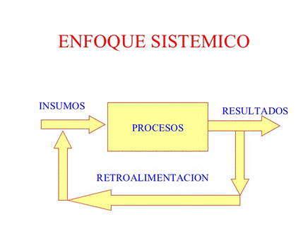

Las ideas del enfoque sistémico no son nuevas, ya desde la antigüedad greco-romana se intentó establecer las leyes a que obedece la formación de un sistema de conocimientos.
En el transcurso del tiempo, muchos autores han empleado el enfoque sistémico para estudiar los elementos que conforman determinados procesos.
En el siglo XX se produjo un gran desarrollo de la ciencia y la técnica y como consecuencia de esta situación, en la segunda mitad de ese siglo, las ideas del enfoque sistémico se perfeccionaron y aplicaron a las más diversas ramas de la producción y los servicios, de las investigaciones científicas y de los procesos tecnológicos.
Consiste en un método de análisis para obtener un amplio razonamiento y pensamiento crítico en relación a los fenómenos, problemas y situaciones que ocurran dentro de un sistema.
El enfoque sistémico tiene como punto principal el concepto del sistema, que es un conjunto de elementos interrelacionados con un objetivo común. Es el modo de abordar los objetos y fenómenos no puede ser aislado, sino que tienen que verse como parte de un todo.
El enfoque sistémico es una forma de entender y abordar un problema o situación compleja como un conjunto de elementos interconectados e interdependientes en constante interacción y cambio. Se trata de un enfoque holístico que busca analizar el conjunto de relaciones e interacciones que influyen en un sistema determinado, en lugar de centrarse únicamente en sus elementos aislados. El enfoque sistémico se utiliza en diversos campos, como la psicología, la sociología, la gestión de empresas, la ecología y la ingeniería, entre otros.
No es la suma de elementos, sino un conjunto de elementos que se encuentran en interacción, de forma integral, que produce nuevas cualidades con características diferentes, cuyo resultado es superior al de los componentes que lo forman y provocan un salto de calidad.
El también conocido como el pensamiento sistémico, el pensamiento en sistemas o la teoría de sistemas provee un marco amplio y diverso para orientar el razonamiento analítico y el pensamiento crítico sobre distintos fenómenos, situaciones y problemas.
